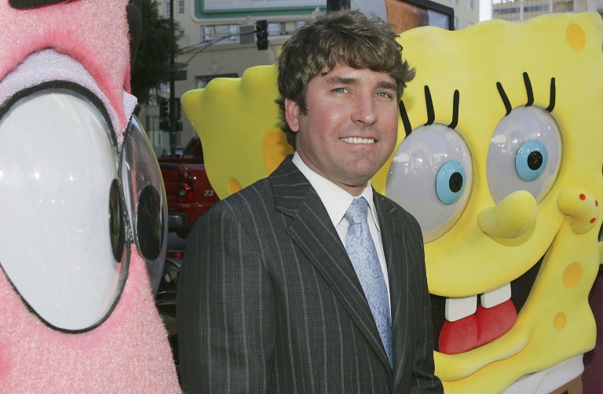

Bob Esponja
 O Bob Esponja é uma animação onde em cada episódio alguma aventura dele e de seus amigos acontece
O Bob Esponja é uma animação onde em cada episódio alguma aventura dele e de seus amigos acontece 
Historia
Bob Esponja Calça Quadrada é uma série de animação americana, sendo produzida e exibida pelo canal Nickelodeon. A série narra as aventuras e os empreendimentos do personagem-título e de seus diversos amigos na fictícia cidade subaquática de Fenda do Biquíni. A popularidade da série a tornou uma franquia de mídia, bem como a animação/série de maior audiência Nickelodeon e a propriedade mais distribuída internacionalmente pela Paramount Media Networks. A franquia de mídia da série gerou um lucro de US$ 13 bilhões em receita de merchandising para a Nickelodeon em 2019. A série é livre para todos os públicos.
Muitas das ideias da série originaram uma história em quadrinhos educacional e inédita, intitulada The Intertidal Zone, que Hillenburg havia criado em meados da década de 1980. Ele começou a desenvolver Bob Esponja Calça Quadrada em uma série televisiva em 1996 após o cancelamento de Rocko's Modern Life, e contatou Tom Kenny, que com Hillenburg em Rocko's Modern Life.
O episódio piloto da animação estreou na Nickelodeon em 1º de maio de 1999 após a exibição dos Kids' Choice Awards daquele ano, e estreou oficialmente em 17 de julho. A série é mundialmente aclamada desde sua estreia devido a sua simplicidade e ao seu apelo para todas as faixas etárias, e ganhou enorme popularidade em sua segunda temporada. A série inspirou diversas longas-metragens: Bob Esponja - O Filme, Um Herói Fora D'Água e O Incrível Resgate. Duas séries spin-offs também foram produzidas: Kamp Coral e The Patrick Star Show.
A animação foi nomeada em uma variedade de diferentes prêmios, incluindo dezessete indicações nos Annie Award e nos Golden Reel Awards (com seis e oito vitórias, respectivamente), quinze nomeações nos Emmy Awards (com uma vitória), treze indicações nos Kids Choice Awards (perdendo apenas uma condecoração) e quatro nomeações nos BAFTA Children (com duas vitórias). Em 2011, Spongiforma squarepantsii — uma espécie descrita como cogumelo — foi nomeada como uma homenagem ao personagem-título do desenho animado. Em junho de 2016 estreou o espetáculo musical SpongeBob SquarePants: The Broadway Musical, apresentado inicialmente no Oriental Theatre em Chicago e no ano seguinte na Broadway, em Nova York.
Criador
A serie foi criada pelo biólogo marinho e animador Stephen Hillenburg
Ele iniciou sua carreira profissional em 1984, instruindo biologia marinha, no Orange County Marine Institute, onde escreveu The Intertidal Zone, uma revista em quadrinhos informativa sobre animais de poças de maré, que ele costumava educar seus alunos. Em 1989, dois anos depois de deixar o ensino, Hillenburg se matriculou no California Instiute of the arts para seguir uma carreira em animação. Mais tarde, ele recebeu um emprego na série de televisão animada Nickelodeon, Rock Life, Modern Life (1993-1996) e como roteirista nos Rugrats. Após seu sucesso com The Green Beret e Wormholes (ambos 1992), curtas-metragens que ele fazia enquanto estudava animação.
Em 1994, Hillenburg começou a desenvolver personagens e conceitos da Zona Intertidal para o que se tornou Bob Esponja Calça Quadrada. O programa foi ao ar continuamente desde sua estreia em 1999. Ele também dirigiu The Bob Esponja Calça Quadrada (2004), que ele originalmente pretendia ser o final da série. No entanto, a Nickelodeon queria produzir mais episódios, então Hillenburg renunciou ao cargo de protagonista. Ele voltou a fazer curtas-metragens na Hollywood Blvd., EUA, em 2013, mas continuou a ser creditado como produtor executivo de Bob Esponja Calça Quadrada. Hillenburg co-escreveu a história para a segunda adaptação cinematográfica da série, O Bob Esponja: Bob Esponja Fora da Água, lançado em 2015.
Stephen foi um biólogo marinho que se interessou por esponjas do mar, como um suporte para ele criar o desenho. Stephen mudou a forma da esponja do mar para uma esponja de louças. E assim surgiu o personagem principal do desenho, com o tempo, surgiram outros. E "Spongebob Squarepants" tornou-se um sucesso, e posteriormente foi reconhecido como o desenho na Nickelodeon há mais tempo no ar.
Em março de 2017, Hillenburg foi diagnosticado com esclerose lateral amiotrófica. Faleceu a 26 de novembro de 2018, aos 57 anos, devido a complicações desta doença neurodegenerativa, progressiva e rara.
Amigos do Bob Esponja
- Patrik Estrela,
Lula Molusco,
Seu Sirigueijo,
Sandy Bochechas,
Plankton, gary (seu mascote), dentre outros
Essa é a historia do Bob esponja